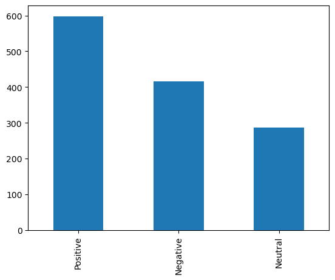
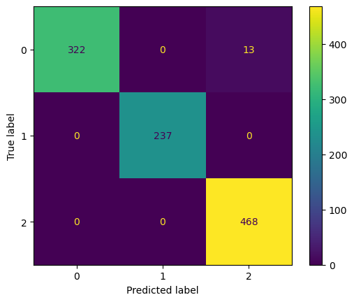
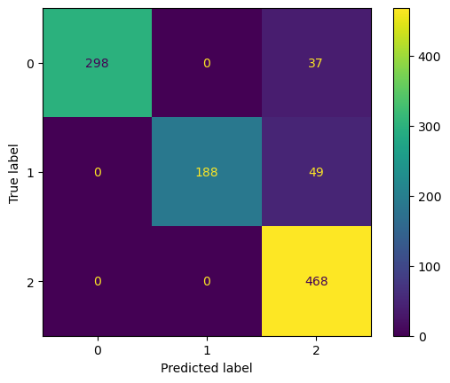

This dataset contains text I collected from twitter api. The text mainly talks about the users’ reviews about consumers privacy by using media. Then I use sentiment analysis to determine the users’ attitudes (Neutral, Positive, Negaitve) and assign a attitude socres about their texts. There are 1299 rows and 4 columns in this dataset.
Unnamed: 0 : The number id of each content
text: Each review from twitter users
result: Sentiment classification of each text(Positive, Neutral, Negative)
scores: Attitude scores. How likely the attitude to be Neutral, Postive, Negative
Methods I plan to use
Support Vector Machine
Support Vector Machine (SVM) is a kind of generalized linear classifier that performs binary classification on data according to supervised learning, and its decision boundary is the maximum margin for solving the learning samples Hyperplane (maximum-margin hyperplane).
SVM uses the hinge loss function (hinge loss) to calculate the empirical risk and adds a regularization term to the solution system to optimize the structural risk (structural risk). It is a sparse and robust classifier. SVM can perform nonlinear classification through the kernel method, which is one of the common kernel learning methods
Linearly Separable SVM When the training data is linearly separable, a linear classifier can be learned by maximizing the hard margin (hard margin, what is hard and soft margin will be discussed below), that is, hard margin SVM, such as H3 in the above figure. Linear SVM When the training data is not linearly separable but can be approximately linearly separable, a linear classifier can also be learned by maximizing the soft margin, that is, soft margin SVM. Nonlinear SVM When the training data is linearly inseparable, a non-linear SVM can be learned by using the kernel trick and soft margin maximization.
Steps
Import datasets
Drop unnecessary columns from the dataset(From this dataset, I mainly use text and result columns)
Basic data exploration
Make some necessary EDA plots to get some first insight of the dataset.
I will use y = "result" (output_score) and "text" as feature.
Then I will reprocess the column text (Important!)
1. Drop NA
2. Change all letters to lower case
3. Broke the sentence into words
4. Remove stopwords
Split Dataset
I will split dataset into 80% training data and 20% test data to get better prediction for SVM
Training the model and Testing the results
Use x_train,y_train to build a model of SVM
Evaluate the performance of the SVM model by using the test data.
Train different kernel in order to get the best performance of model
Generate a confusion matrix plot for SVM model to evaluate the performance
Conclusion
Gather the result of the SVM performance
Step 1 Import Dataset
Read dataset in pd.read_csv and display first several rows.
Code
# Read dataset in pd.read_csv and display first several rows.import pandas as pddf = pd.read_csv("../data/01-modified-data/pytweetresult.csv")df.head()
Unnamed: 0
text
result
scores
0
0
A more memorable connection is one that respec...
Positive
15.4
1
1
A more memorable connection is one that respec...
Positive
15.4
2
2
RT @OkeyMor57: @jay_scherrer @muskQu0tes @elon...
Negative
24.2
3
3
@jay_scherrer @muskQu0tes @elonmusk Elon Musk ...
Negative
14.0
4
4
@DanKnightMMA Dear Dan - you seem like an enga...
Positive
26.0
Print shape and columns of the dataset and describe the dataset
Code
# Print shape and columns of the dataset and describe the datasetprint(df.shape)print(df.columns)print(df.describe)
(1300, 4)
Index(['Unnamed: 0', 'text', 'result', 'scores'], dtype='object')
<bound method NDFrame.describe of Unnamed: 0 text result \
0 0 A more memorable connection is one that respec... Positive
1 1 A more memorable connection is one that respec... Positive
2 2 RT @OkeyMor57: @jay_scherrer @muskQu0tes @elon... Negative
3 3 @jay_scherrer @muskQu0tes @elonmusk Elon Musk ... Negative
4 4 @DanKnightMMA Dear Dan - you seem like an enga... Positive
... ... ... ...
1295 1295 When corporations write the rules, they only p... Positive
1296 1296 The American Data Privacy Protection Act (ADPP... Positive
1297 1297 Consumer privacy predictions—how marketers wil... Negative
1298 1298 To balance the advertisement benefits for busi... Positive
1299 1299 Consumer privacy predictions—how marketers wil... Negative
scores
0 15.4
1 15.4
2 24.2
3 14.0
4 26.0
... ...
1295 11.6
1296 9.5
1297 15.1
1298 6.9
1299 13.8
[1300 rows x 4 columns]>
Step 2: Basic data exploration
Insert code to explore the load balance and count the times infl_score = 0 and infl_score = 1
Code
#Insert code to explore the load balance and count the times infl_score = 0 and infl_score = 1print("Number of points with result = Negative:",sum(df['result']=='Negative'),sum(df['result']=='Negative')/(sum(df['result']=='Negative')+sum(df['result']=='Neutral')+sum(df['result']=='Positive')))print("Number of points with result = Neutral:",sum(df['result']=='Neutral'),sum(df['result']=='Neutral')/(sum(df['result']=='Negative')+sum(df['result']=='Neutral')+sum(df['result']=='Positive')))print("Number of points with result = Neutral:",sum(df['result']=='Positive'),sum(df['result']=='Positive')/(sum(df['result']=='Negative')+sum(df['result']=='Neutral')+sum(df['result']=='Positive')))
Number of points with result = Negative: 416 0.32
Number of points with result = Neutral: 286 0.22
Number of points with result = Neutral: 598 0.46
Make Visulization plot of EDA
Code
df['result'].value_counts().plot(kind="bar")
<AxesSubplot:>

As we can see in the plot, Neutral is above 50% in the result of this dataset, the second more value is Postive, then is Negative
# insert code to remove blank rows if any.df['text'].dropna()# Change all the text to lower case.df['text'] = [entry.lower() for entry in df['text']]# Tokenization In this each entry in the df will be broken into set of wordsdf['text'] = [word_tokenize(entry) for entry in df['text']]# Remove Stop words, Non-Numeric and perfom Word Stemming/Lemmenting.tag_map = defaultdict(lambda : wn.NOUN)tag_map['J'] = wn.ADJtag_map['V'] = wn.VERBtag_map['R'] = wn.ADVfor index,entry inenumerate(df['text']):# Declaring Empty List to store the words that follow the rules for this step Final_words = []# Initializing WordNetLemmatizer() word_Lemmatized = WordNetLemmatizer()# pos_tag function below will provide the 'tag' i.e if the word is Noun(N) or Verb(V) or something else.for word, tag in pos_tag(entry):# Below condition is to check for Stop words and consider only alphabetsif word notin stopwords.words('english') and word.isalpha(): word_Final = word_Lemmatized.lemmatize(word,tag_map[tag[0]]) Final_words.append(word_Final)# The final processed set of words for each iteration will be stored in 'text_final' df.loc[index,'text_final'] =str(Final_words)df.head()
text
result
text_final
0
[a, more, memorable, connection, is, one, that...
Positive
['memorable', 'connection', 'one', 'respect', ...
1
[a, more, memorable, connection, is, one, that...
Positive
['memorable', 'connection', 'one', 'respect', ...
2
[rt, @, okeymor57, :, @, jay_scherrer, @, musk...
Negative
['rt', 'elonmusk', 'elon', 'musk', 'challenge'...
3
[@, jay_scherrer, @, muskqu0tes, @, elonmusk, ...
Negative
['elonmusk', 'elon', 'musk', 'challenge', 'don...
4
[@, danknightmma, dear, dan, -, you, seem, lik...
Positive
['danknightmma', 'dear', 'dan', 'seem', 'like'...
Drop initial text column
Code
df = df.drop(['text'],axis=1) # Drop Initial text columndf.head()
result
text_final
0
Positive
['memorable', 'connection', 'one', 'respect', ...
1
Positive
['memorable', 'connection', 'one', 'respect', ...
2
Negative
['rt', 'elonmusk', 'elon', 'musk', 'challenge'...
3
Negative
['elonmusk', 'elon', 'musk', 'challenge', 'don...
4
Positive
['danknightmma', 'dear', 'dan', 'seem', 'like'...
Step 3 Split dataset
Code
# Insert code to partition datasets into training and testing datasets and print types and shapes of these datasetsfrom sklearn.model_selection import train_test_splitx_train,x_test,y_train,y_test=train_test_split(df['text_final'],df['result'],test_size=0.8)print(type(x_train),x_train.shape)print(type(y_train),y_train.shape)print(type(x_test),x_test.shape)print(type(y_test),y_test.shape)
Insert code to encode the column infl_score with value between 0 and 1 and 2. 0 represents Negative, 1 represents Neutral, 2 represnets Positive
Code
# Insert code to encode the column infl_score with value between 0 and 1 and 2. 0 represents Negative, 1 represents Neutral, 2 represnets PositiveEncoder = LabelEncoder()y_train = Encoder.fit_transform(y_train)y_test = Encoder.fit_transform(y_test)
Word Vectorization
One sentence summarizes the use of word vectors: it provides a mathematical method to convert symbolic information such as natural language into digital information in the form of vectors. This transforms natural language problems into machine learning problems.
The most commonly used word vector models are nothing more than one-hot Representation model and distributed representation model.
One-hot Representation One-hot Representation uses a very long vector to represent a word. The length of the vector is the size N of the dictionary. Each vector has only one dimension which is 1, indicating the position of the word in the dictionary, and all other dimensions are 0.
If this One-hot Representation is stored in a sparse manner, it will be very concise, that is, assign a digital ID to each word. But this representation has two disadvantages:
Suffering from the curse of dimensionality, the dimension of each word is the length of the corpus dictionary.
Word encoding is often random, resulting in the inability to describe the similarity between words
Distributed representation Distributed representation was first proposed by Hinton in 1986. It relies on the idea that the semantics of words is determined by contextual information, that is, words appearing in the same context have similar semantics.
Distributed representation Distributed representation was first proposed by Hinton in 1986. It relies on the idea that the semantics of words is determined by contextual information, that is, words appearing in the same context have similar semantics.
Distributed Representation vs. one-hot representation
Formally, the one-hot representation word vector is a sparse word vector whose length is the length of the dictionary, while the Distributed Representation is a fixed-length dense word vector. Generally it looks like this: [0.792, −0.177, −0.107, 0.109, −0.542, …] Functionally, the biggest contribution of Distributed representation is to make related or similar words closer in distance.
Now the column text is ready to be fed into SVM algortithms.
Step 4 Training and Predicting the model
Code
# Classifier - Algorithm - SVM# fit the training dataset on the classifierSVC = svm.SVC()model = SVC.fit(Train_X_Tfidf,y_train)# predict the labels on validation datasetyp_train = model.predict(Train_X_Tfidf)yp_test = model.predict(Test_X_Tfidf)
Code
print("confusion matrix of train data:")print(confusion_matrix(y_train,yp_train))print(" ")print("confusion matrix of test data:")print(confusion_matrix(y_test,yp_test))print(" ")print("classification report of train data:")print(classification_report(y_train,yp_train))print(" ")print("classification report of test data:")print(classification_report(y_test,yp_test))
# Save the results in a data frame. dic_train = classification_report(y_train,yp_train,output_dict=True)dic_test = classification_report(y_test,yp_test,output_dict=True)result_train = pd.DataFrame.from_dict(dic_train)result_train = result_train.transpose()result_test = pd.DataFrame.from_dict(dic_test)result_test = result_test.transpose()
display the results data frame
Code
# display the results data frameprint("result dataframe of train dataset:")print(result_train)print("")print("result dataframe of test dataset:")print(result_test)
Display Confusion Matrix for the test data. Remember to use the ConfusionMatrixDisplay function.
Code
# Display Confusion Matrix for the test data. Remember to use the ConfusionMatrixDisplay function.ConfusionMatrixDisplay.from_predictions(y_test, yp_test)
<sklearn.metrics._plot.confusion_matrix.ConfusionMatrixDisplay at 0x7fadb1296ad0>

Comment: As we can see, the precision, recall, f1-score and support of accuracy are all about 96%, which we can conclude SVM is a good model to predict the sentiment analysis of this text dataset.
Tuning Hyperparameters
Kernel: Kernel methods kernel methods (KMs) are a class of pattern recognition algorithms. Its purpose is to find and learn the mutual relationship in a set of data. Widely used kernel methods include support vector machines, Gaussian processes, etc. The kernel method is an effective way to solve the problem of nonlinear pattern analysis. Its core idea is: first, the original data is embedded into a suitable high-dimensional feature space through some nonlinear mapping; then, the general linear learner is used in this New in-space analysis and processing modes. Kernel methods have distinct advantages over the paradigm of using general-purpose nonlinear learners to analyze directly on raw data: First of all, the general nonlinear learner is inconvenient to reflect the characteristics of specific application problems, while the nonlinear mapping of the kernel method is designed for specific application problems, which is convenient for integrating prior knowledge related to the problem. Furthermore, linear learners have better overfitting control than nonlinear learners, which can better guarantee generalization performance. Also, it is very important that the kernel method is still a way to achieve efficient calculations. It can use the kernel function to implicitly nonlinear mapping in the linear learner for simultaneous calculations, so that the computational complexity has nothing to do with the dimensionality of the high-dimensional feature space.
In this dataset, I will train different kernels(‘poly’,‘RBF’ and ‘Linear’) to determine which suports the most accurate classifers.
SVM with Polynomial kernels
A polynomial kernel is a more generalized form of the linear kernel. The polynomial kernel can distinguish curved or nonlinear input space.
Calculate the confusion matrix and classification report for the train and test data.
Code
# Calculate the confusion matrix and classification report for the train and test data. print("confusion matrix of train data:")print(confusion_matrix(y_train,yp_train))print(" ")print("confusion matrix of test data:")print(confusion_matrix(y_test,yp_test))print(" ")print("classification report of train data:")print(classification_report(y_train,yp_train))print(" ")print("classification reportof test data:")print(classification_report(y_test,yp_test))
# Save the results in a data frame.dic_train = classification_report(y_train,yp_train,output_dict=True)dic_test = classification_report(y_test,yp_test,output_dict=True)result_train = pd.DataFrame.from_dict(dic_train)result_train = result_train.transpose()result_test = pd.DataFrame.from_dict(dic_test)result_test = result_test.transpose()
display the results data frame
Code
# display the results data frameprint("result dataframe of train dataset:")print(result_train)print("")print("result dataframe of test dataset:")print(result_test)
# Display Confusion Matrix for the test data. Remember to use the ConfusionMatrixDisplay function.ConfusionMatrixDisplay.from_predictions(y_test, yp_test)
<sklearn.metrics._plot.confusion_matrix.ConfusionMatrixDisplay at 0x7fada217a4a0>
SVM with RBF kernels
Radial Basis Function Kernel The Radial basis function kernel is a popular kernel function commonly used in support vector machine classification. RBF can map an input space in infinite dimensional space.
# Save the results in a data frame.dic_train = classification_report(y_train,yp_train,output_dict=True)dic_test = classification_report(y_test,yp_test,output_dict=True)result_train = pd.DataFrame.from_dict(dic_train)result_train = result_train.transpose()result_test = pd.DataFrame.from_dict(dic_test)result_test = result_test.transpose()# display the results data frameprint("result dataframe of train dataset:")print(result_train)print("")print("result dataframe of test dataset:")print(result_test)
Display Confusion Matrix for the test data. Remember to use the ConfusionMatrixDisplay function.
Code
# Display Confusion Matrix for the test data. Remember to use the ConfusionMatrixDisplay function.ConfusionMatrixDisplay.from_predictions(y_test, yp_test)
<sklearn.metrics._plot.confusion_matrix.ConfusionMatrixDisplay at 0x7fadb3b38d60>

SVM with Linear Kernels
A linear kernel can be used as normal dot product any two given observations. The product between two vectors is the sum of the multiplication of each pair of input values.
# Save the results in a data frame.dic_train = classification_report(y_train,yp_train,output_dict=True)dic_test = classification_report(y_test,yp_test,output_dict=True)result_train = pd.DataFrame.from_dict(dic_train)result_train = result_train.transpose()result_test = pd.DataFrame.from_dict(dic_test)result_test = result_test.transpose()# display the results data frameprint("result dataframe of train dataset:")print(result_train)print("")print("result dataframe of test dataset:")print(result_test)
Display Confusion Matrix for the test data. Remember to use the ConfusionMatrixDisplay function.
Code
# Display Confusion Matrix for the test data. Remember to use the ConfusionMatrixDisplay function.ConfusionMatrixDisplay.from_predictions(y_test, yp_test)
<sklearn.metrics._plot.confusion_matrix.ConfusionMatrixDisplay at 0x7fadb3b67f70>
Comment: From the comparisons above from these three kernels, the linear permance best with showing the higher accuracy score of test which is almost 99%. The error made becomes smaller.
Conclusion
From the above three kernels training performance, we can conclude that linear kernel is the most suitable kernel from above three kernels(poly, rbf, linear). The accuracy score is almost 96%. By using the the hyperparameter tunning, the accuracy is higher and the model becomes a more accurate classifier.
SVM Classifiers offer good accuracy and perform faster prediction compared to Naïve Bayes algorithm. They also use less memory because they use a subset of training points in the decision phase. SVM works well with a clear margin of separation and with high dimensional space. However, SVM is not suitable for large datasets because of its high training time and it also takes more time in training compared to Naïve Bayes. It works poorly with overlapping classes and is also sensitive to the type of kernel used.
Overall, I think SVM is a suitable model to predict sentiment analysis of text data about consumer privacy.
Reference
Wikimedia Foundation. (2022, December 2). Support Vector Machine. Wikipedia. Retrieved December 3, 2022, from https://en.wikipedia.org/wiki/Support_vector_machine